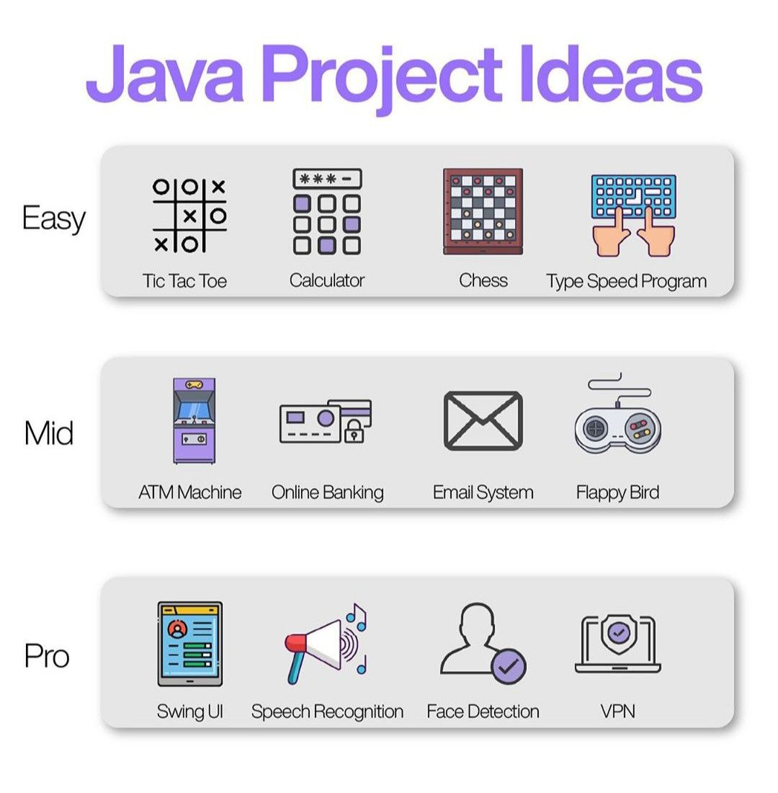

LEARN JAVA PROGRAMMING

One of the most widely used programming languages, Java is used as the server-side language for most
back-end development projects, including those involving big data and Android development. Java is
also commonly used for desktop computing, other mobile computing, games, and numerical computing.
ava is also commonly used for desktop computing, other mobile computing, games, and numerical
computing. The popularity of Java is further evidenced with 90% of all Fortune 500 companies using
Java.
The portability of Java contributes to its wide use and popularity, but there are other reasons why
software developers continue to choose Java
Since it is an object-oriented language; its robust, secure and relatively simpler and easier to
learn than languages such as C and C++.
Object-oriented languages make complex problems easier to solve and provide greater modularity. This
is a natural and pragmatic approach for software design. Java objects encapsulate data and behavior
so that code can be reused, which makes testing and troubleshooting easier.

With Java, objects are created using classes that define the attributes (data) and behaviors
(defined by methods coded in the class). Java features such as inheritance further contribute to
simplified code. With inheritance, similar but different types of objects are simplified by
inheriting common attributes and behaviors from the parent class. This allows reuse of the common
code while allowing for differences.This is a second-level course for people learning the Java
language. It provides the additional key skills needed by Java programmers. This course uses today's
main Java version for its practices (currently Java 11).With booming demand across industries
worldwide, professionals who not only learn Java, but are formally trained and certified, can set
themselves up for a promising, challenging, and rewarding career.
Both of these development programs come with their strong suits. ... Java, however, is not
recommended for beginners as it is a more complex program. Python is more forgiving as you can take
shortcuts such as reusing an old variable. Additionally, many users find Python easier to read and
understand than Java.
With booming demand across industries worldwide, professionals who not only learn Java, but are
formally trained and certified, can set themselves up for a promising, challenging, and rewarding
career. Learning java in 3 months is possible. Although, it would require a lot of time to master it
but at least in three months you can get good knowledge about Java SE.Java. Java is an
object-oriented and feature-heavy programming language that's in high demand. ... While it may not
be as easy to pick up as Python, Java is a high-level language, and so it's still relatively
beginner-friendly. However, it has a slow startup and will take beginners much longer to deploy
their first project